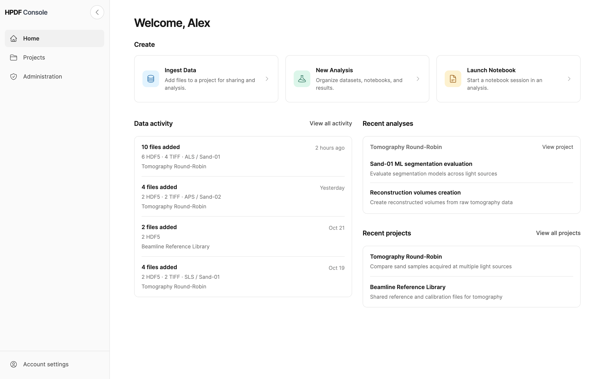
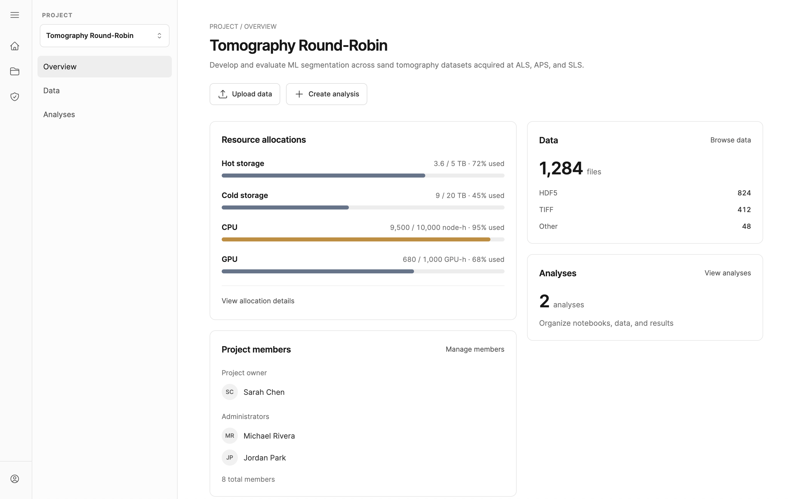

Product design · Work in progress
Designing the HPDF Console
A unified workspace for scientists to manage data, computing resources, and analyses at the High Performance Data Facility.
HPDF is a U.S. Department of Energy user facility being developed to support data-intensive scientific research. The Console is the interface through which researchers will access its services and collaborate on projects.
01 / Home
Making ongoing work easy to find
The home page brings recent data activity, analyses, and projects into one view. Quick-start actions help users move directly into common workflows, including creating a project or uploading data.

02 / Project overview
Bringing the project into focus
Projects bring together shared data, analyses, resource allocations, and team members. The overview surfaces resource consumption alongside the project's files and analyses, while providing paths to manage allocations and collaboration.

Design direction
From facility services to researcher workflows
These explorations focus on making a complex research infrastructure approachable: organizing the experience around what scientists are trying to accomplish, while keeping resource usage and administrative details visible when they matter. The designs are evolving prototypes, not a launched product.